Les neuromédiateurs
« C'est le concept du médiateur que je vous demande de bien retenir, surtout l'acétylcholine, le GABA, la dopamine et la sérotonine : non pas les sous-types de récepteurs par cœur, mais leur impact dans des maladies particulières : Parkinson, dépression, schizophrénie. » Molécules du listing à reconnaître et dessiner : acétylcholine, glutamate, glycine, GABA, tryptophane, sérotonine, mélatonine (+ noradrénaline et dopamine, vues en 2.3). À laisser tomber : propriétés générales de la synapse, sous-types du glutamate, glycine comme neuromédiateur, opioïdes (vus en séminaire).
1. Vue d'ensembledias 2-15 · généralités à survoler · 1 concepts

Concepts à comprendre (1)
Trois familles
Excitateurs : acétylcholine, glutamate (entrée de cations → dépolarisation). Inhibiteurs : glycine, GABA (entrée de Cl⁻ → hyperpolarisation). À action complexe : noradrénaline, dopamine, sérotonine (RCPG, effets selon les sous-types). Arrêt de l'effet : dégradation enzymatique ou recapture.
2. L'acétylcholinedias 17-26 · 2 concepts
Molécule à dessiner : acétylcholine = ester de l'acide acétique et de la choline (ammonium quaternaire N⁺(CH₃)₃). Synthèse : acétyl-CoA + choline → (choline acétyltransférase) ; dégradation : acétylcholinestérase → acétate + choline (recaptée).
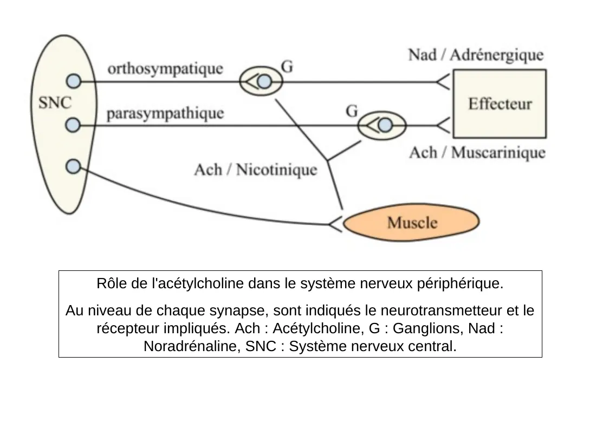
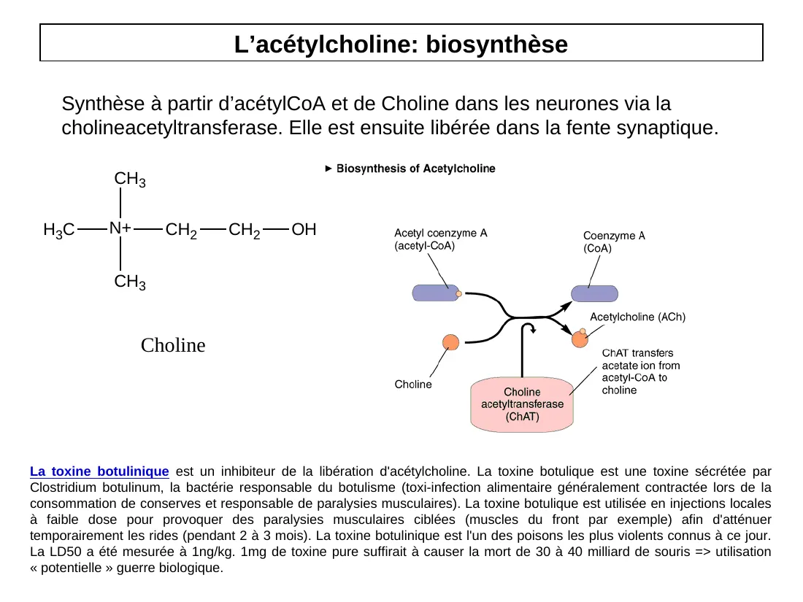
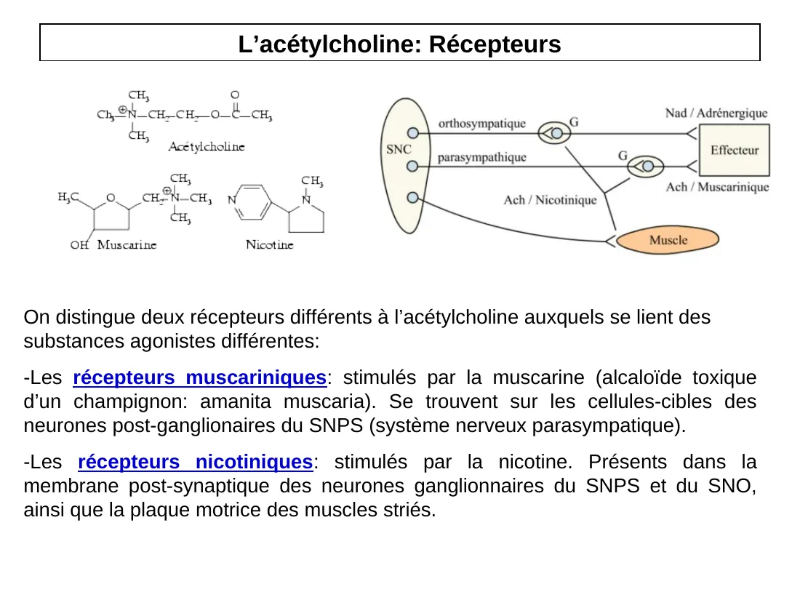
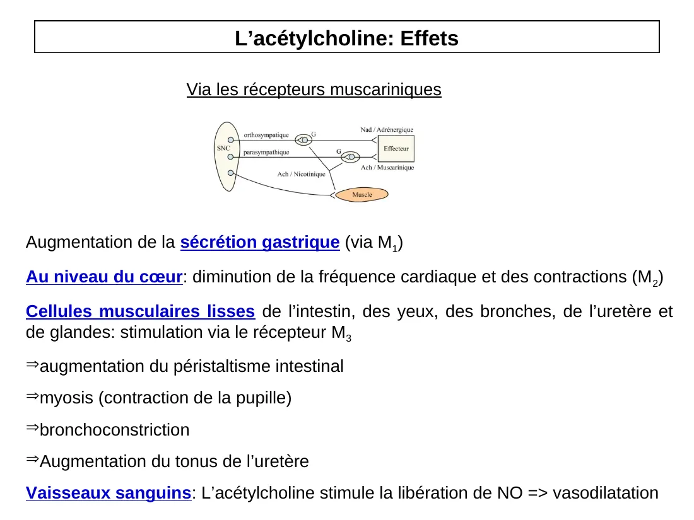
Concepts à comprendre (2)
Nicotiniques vs muscariniques
Nicotiniques (récepteurs canaux, pentamères) : ganglions (sympathiques et parasympathiques), médullosurrénale, jonction neuromusculaire → contraction du muscle strié. Muscariniques (RCPG, M1-M5) : organes cibles du parasympathique → digestion (sécrétion gastrique M1, motilité), cœur ralenti (M2), bronchoconstriction, myosis, sécrétions. « Je ne vous demande pas de retenir les sous-types muscariniques. »
Une injection d'acétylcholine : quels effets sur le cœur et l'œil ? (sans rien retenir par cœur)
Le parasympathique fait l'inverse du sympathique (fight or flight) : la noradrénaline accélère le cœur et dilate la pupille, donc l'acétylcholine (muscarinique) ralentit le cœur et fait un myosis. « Si vous avez compris ça, il n'y a rien à retenir par cœur. »
Toxines et médicaments
La toxine botulique empêche la libération d'acétylcholine → paralysie (usage esthétique, spasticité). pour information les inhibiteurs de l'acétylcholinestérase (Alzheimer, myasthénie) et les antimuscariniques (atropine) sont vus en pharmacologie.
3. Les acides aminés neuromédiateurs : glutamate, glycine, GABAdias 28-45 · 3 concepts
« Je demande juste de savoir que certains acides aminés sont des neuromédiateurs » : pas de questions sur les sous-types et les mécanismes des récepteurs du glutamate, ni sur la glycine. Par contre le GABA et son récepteur GABA-A : « ça, je vous demande de bien le retenir et de comprendre le principe ». Molécules à dessiner : glutamate, glycine, GABA (et glutamate → GABA par la glutamate décarboxylase, perte d'un CO₂).
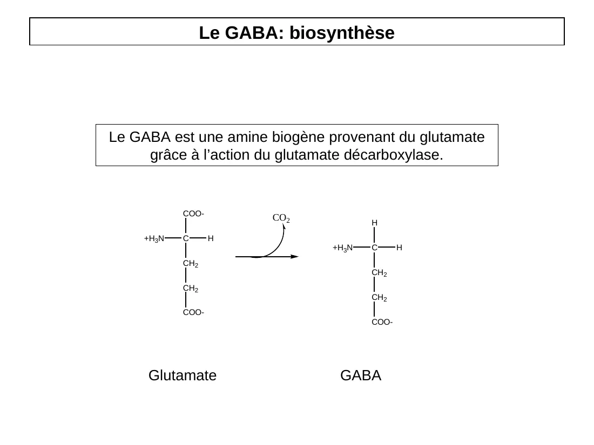
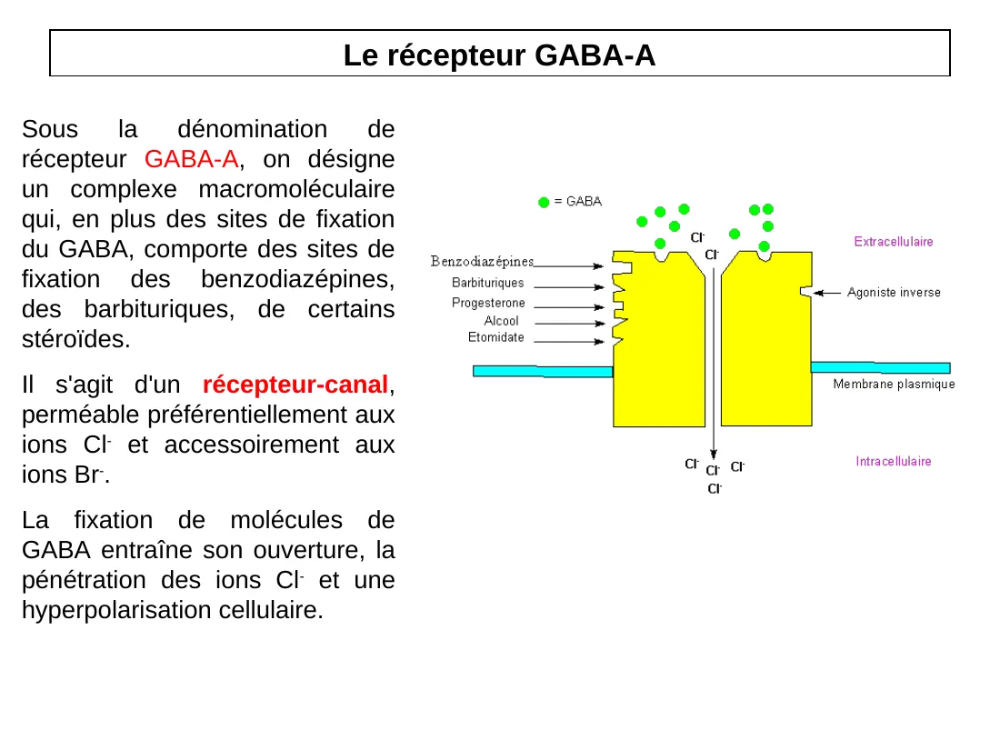
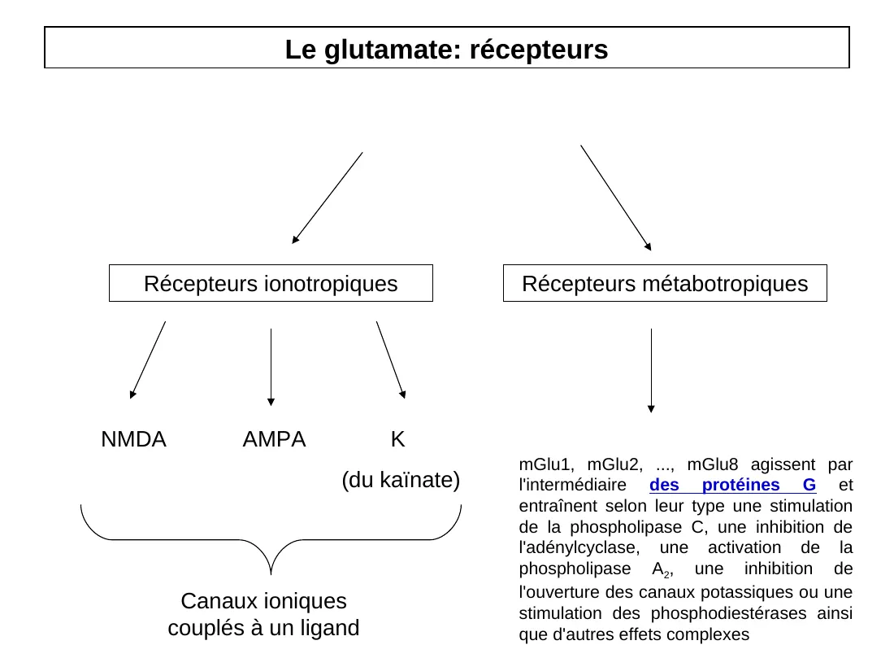
Concepts à comprendre (3)
Glutamate (excitateur)
Formé à partir de l'α-cétoglutarate (cycle de Krebs) par transamination ou glutamate déshydrogénase. Neuromédiateur excitateur majeur du SNC (50 % des synapses) : entrée de Na⁺ et Ca²⁺, mémorisation. Récepteurs ionotropiques (NMDA, bloqué par le Mg²⁺ ; AMPA ; kaïnate) et métabotropiques (mGlu) pour information.
Glycine (inhibitrice)
Le plus simple des acides aminés ; dans la moelle et le tronc cérébral, récepteur canal Cl⁻ → hyperpolarisation. pour information la strychnine (taupicide) l'antagonise → convulsions.
GABA et récepteur GABA-A
GABA = acide γ-aminobutyrique, inhibiteur principal du SNC (calme, relâche les muscles). GABA-A : canal Cl⁻ pentamérique avec des sites pour les benzodiazépines, barbituriques, alcool, anesthésiques, neurostéroïdes qui augmentent l'ouverture → plus de Cl⁻ → hyperpolarisation → effet anxiolytique, sédatif, hypnotique, myorelaxant, anticonvulsivant. GABA-B : RCPG (Gi).
Pourquoi l'entrée de chlorure rend-elle le neurone moins excitable ?
Le Cl⁻ est négatif : plus il en entre, plus l'intérieur est négatif (hyperpolarisation) et plus le neurone est loin du seuil de dépolarisation. « C'est purement une question de charge. »
4. Noradrénaline et dopaminedias 47-60 · 3 concepts
Ce que le prof veut pour la dopamine : « d'où vient la dopamine au niveau du SNC à partir de la tyrosine » (tyrosine → L-DOPA → dopamine → noradrénaline), puis son rôle dans la maladie de Parkinson (manque) et la schizophrénie (excès), avec les traitements. Rappel : la noradrénaline n'agit presque pas sur β2 (pas de méthyle sur l'azote).
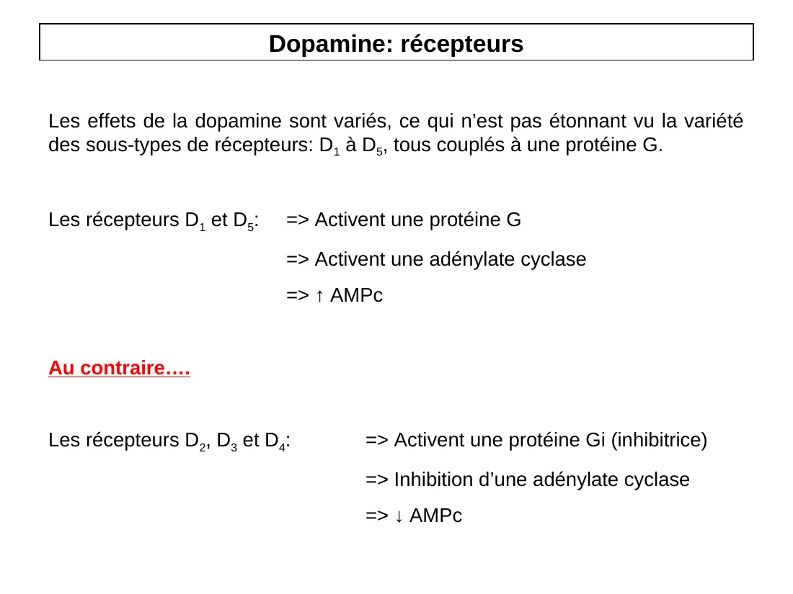
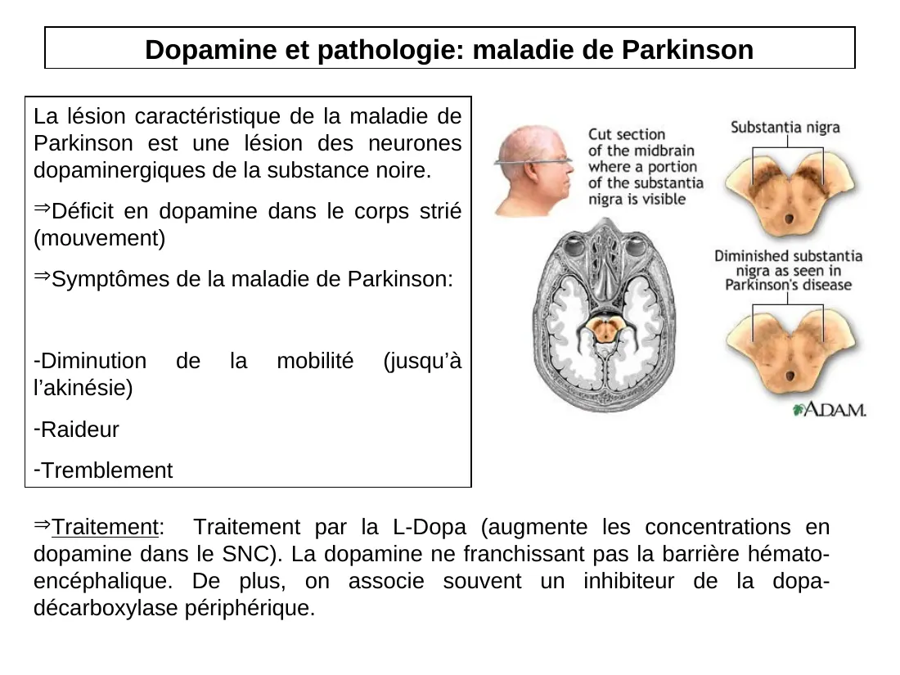
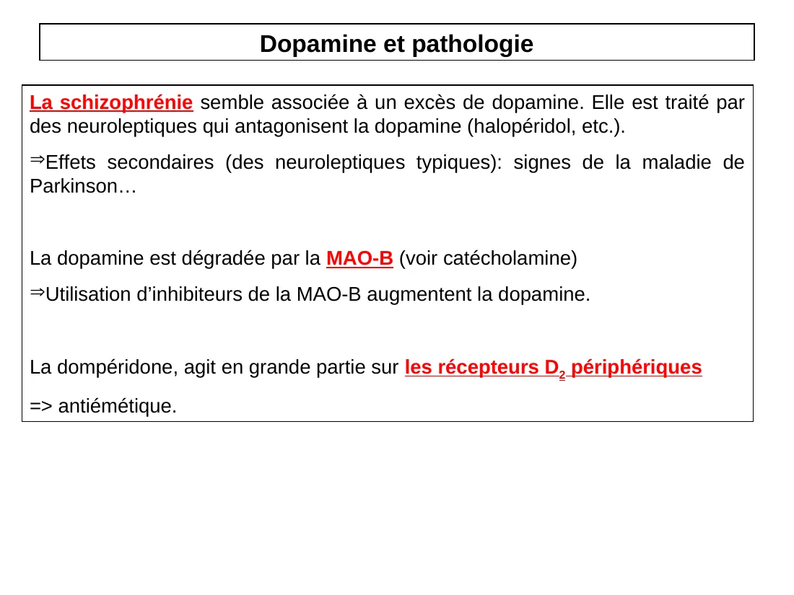
Concepts à comprendre (3)
Dopamine : récepteurs et effets
Neurones de la substance noire (mésencéphale) → corps strié (mouvement) ; aussi émotions, pensée, apprentissage. Récepteurs D1 à D5, tous RCPG : D1, D5 → Gs (AMPc ↑) ; D2, D3, D4 → Gi (AMPc ↓). En périphérie à faible dose : vasodilatation rénale et mésentérique (D1) ; nausées et vomissements (D2 de la zone gâchette).
Maladie de Parkinson
Destruction des neurones dopaminergiques de la substance noire → manque de dopamine dans le striatum → tremblement de repos, rigidité, akinésie. Traitement : L-DOPA (et pas la dopamine, qui ne passe pas la barrière hémato-encéphalique) + inhibiteur périphérique de la DOPA décarboxylase ; inhibiteurs de la COMT (entacapone) et de la MAO-B ; agonistes dopaminergiques.
Schizophrénie
Associée à un excès de dopamine (voie méso-limbique). Traitée par les neuroleptiques, antagonistes des récepteurs D2 (halopéridol…). Effets indésirables des neuroleptiques typiques : syndrome extrapyramidal (pseudo-Parkinson, par blocage D2 du striatum) et hyperprolactinémie (la dopamine est la statine de la prolactine).
Pourquoi un neuroleptique peut-il donner des tremblements comme un parkinsonien ?
Il bloque les récepteurs D2 partout, y compris dans le striatum où la dopamine contrôle le mouvement : on reproduit le manque de dopamine de la maladie de Parkinson.
5. Sérotonine et mélatoninedias 62-75 · 4 concepts
Molécules à dessiner : L-tryptophane → (tryptophane hydroxylase) 5-hydroxytryptophane → (décarboxylase) sérotonine (5-hydroxytryptamine, noyau indole) → dans l'épiphyse : N-acétylation puis O-méthylation → mélatonine. Ce qui intéresse le prof : le rôle de la sérotonine dans l'humeur et la dépression, les nausées et la migraine.
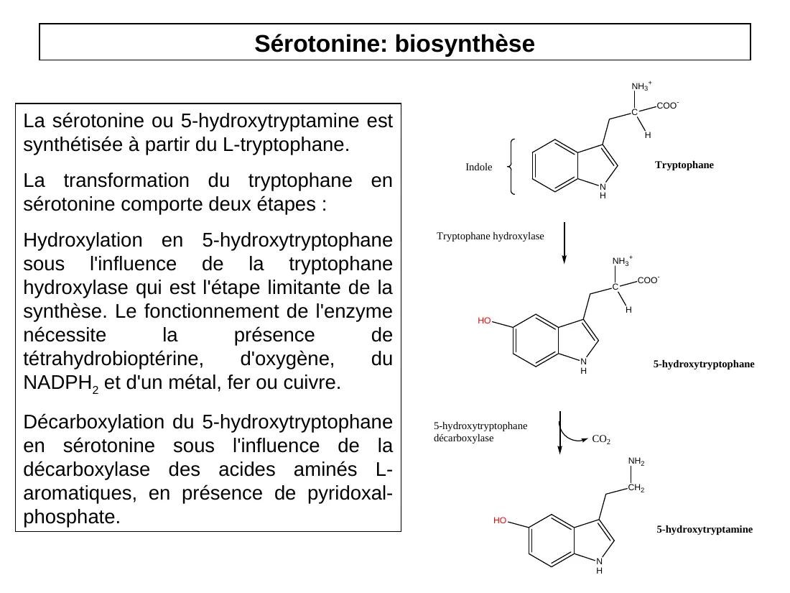
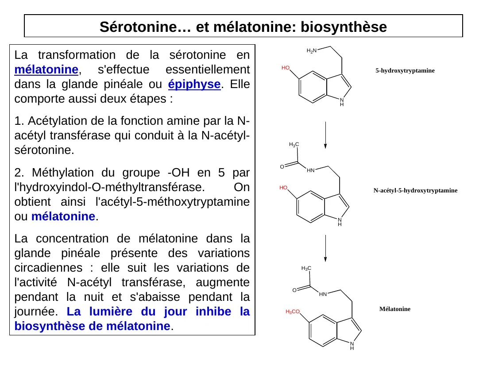
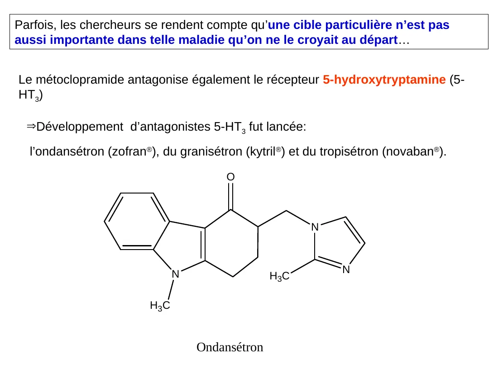
Concepts à comprendre (4)
Où et comment
Dans le SNC, les cellules entérochromaffines du tube digestif (la majorité) et les plaquettes. 7 familles de récepteurs (5-HT1 à 5-HT7 ; 5-HT3 = canal ionique, les autres RCPG) : « je ne vous demande pas de retenir les sous-types ». Dégradée par la MAO-A → acide 5-hydroxyindolacétique (urines).
Humeur, sommeil, dépression
Longtemps appelée, avec l'ocytocine, « hormone du bonheur » : régule le sommeil et surtout l'humeur. Un manque est associé à la dépression → antidépresseurs qui augmentent la sérotonine dans la synapse (inhibiteurs de la recapture, IMAO). Le LSD, de structure proche (noyau indole, 2 carbones et un azote), est l'un des hallucinogènes actifs à la plus faible dose.
Nausées et migraine
En périphérie, la sérotonine (comme la dopamine) déclenche nausées et vomissements via les récepteurs 5-HT3 : le métoclopramide (PRIMPERAN®), développé comme anti-D2, bloque aussi 5-HT3 ; les sétrons sont des anti-5-HT3 (vomissements de la chimiothérapie). Migraine : des agonistes 5-HT1 (triptans) font une vasoconstriction indirecte. La motilité intestinale : « je ne vous demande pas vraiment de la retenir ».
Mélatonine
Produite la nuit par l'épiphyse (glande pinéale) à partir de la sérotonine : règle le rythme veille-sommeil (nycthéméral).
6. Opioïdes endogènesdias 77-82 · vus au séminaire · 1 concepts
Concepts à comprendre (1)
À laisser pour le séminaire
« Les opioïdes endogènes et exogènes, je ne vais pas les voir ici ; vous pouvez laisser tomber ; on les verra dans un séminaire de biochimie humaine. » pour information enképhalines, endorphines, dynorphines ; récepteurs μ, δ, κ ; la morphine les mime (analgésie, dépression respiratoire, constipation).
Ce que le prof a dit en cours
Relevé dans ta transcription du cours des neuromédiateurs du 24/10/2025 (JMD).
- « C'est le concept du médiateur que je vous demande de bien retenir, surtout l'acétylcholine, le GABA, la dopamine et la sérotonine », avec leur impact dans Parkinson, la dépression et la schizophrénie.
- Adrénaline vs acétylcholine (mydriase, myosis, cœur…) : « il ne faut pas retenir par cœur » : le parasympathique fait l'inverse du sympathique.
- Récepteurs muscariniques : « je ne vous demande pas de retenir les sous-types ».
- Glutamate et glycine : savoir juste que des acides aminés sont des neuromédiateurs ; pas de question sur les sous-types et mécanismes de leurs récepteurs.
- GABA-A : « je vous demande de bien le retenir et de comprendre le principe ».
- Dopamine : sa synthèse à partir de la tyrosine, Parkinson (L-DOPA, pas la dopamine, qui ne passe pas la barrière hémato-encéphalique), schizophrénie (excès, antagonistes D2).
- Sérotonine : rôle dans l'humeur et la dépression, nausées et vomissements, migraine ; LSD de structure proche.
- Propriétés générales de la synapse et conduction nerveuse : « vous laissez tomber », c'est de la physiologie.
- Motilité intestinale de la sérotonine, explications purement pharmacologiques : à laisser tomber.
- Opioïdes endogènes et exogènes : « vous pouvez laisser tomber », vus en séminaire.
Les questions posées par le prof
Questions reformulées à partir des points annoncés (les 4 neuromédiateurs clés et leurs pathologies).
- Reformulée · 2.10Décrivez la biosynthèse de la dopamine dans le SNC et son rôle dans la maladie de Parkinson et dans la schizophrénie, avec les traitements. reformulée
Voir la réponse
Tyrosine —(tyrosine hydroxylase)→ L-DOPA —(DOPA décarboxylase)→ dopamine (→ noradrénaline). Parkinson : perte des neurones de la substance noire → dopamine ↓ dans le striatum → L-DOPA (+ inhibiteur périphérique de la décarboxylase), inhibiteurs de la COMT/MAO-B, agonistes. Schizophrénie : excès de dopamine → neuroleptiques anti-D2 ; effets indésirables : syndrome extrapyramidal, hyperprolactinémie. - Reformulée · 2.10Expliquez le fonctionnement du récepteur GABA-A et pourquoi les benzodiazépines et l'alcool sont sédatifs. reformulée
Voir la réponse
Glutamate —(glutamate décarboxylase)→ GABA. GABA-A : canal Cl⁻ pentamérique ; le GABA l'ouvre → Cl⁻ entre → hyperpolarisation → inhibition. Benzodiazépines, barbituriques, alcool : modulateurs allostériques positifs → ouverture renforcée → sédation, anxiolyse, myorelaxation ; effets additifs (danger de l'association). - Reformulée · 2.10Décrivez la voie tryptophane → sérotonine → mélatonine (structures) et les rôles de la sérotonine. reformulée
Voir la réponse
L-tryptophane → (tryptophane hydroxylase) 5-hydroxytryptophane → (décarboxylase) sérotonine (5-HT, noyau indole) → (épiphyse : N-acétylation puis O-méthylation) mélatonine. Rôles de la 5-HT : humeur (dépression), sommeil, nausées (5-HT3), migraine (5-HT1, triptans), motilité intestinale, plaquettes. Dégradation par la MAO-A. - Reformulée · 2.10Comparez les récepteurs nicotiniques et muscariniques de l'acétylcholine (structure, localisation, effets). reformulée
Voir la réponse
Nicotiniques : récepteurs canaux pentamériques ; ganglions, médullosurrénale, jonction neuromusculaire → contraction du muscle strié. Muscariniques : RCPG ; organes du parasympathique → bradycardie, myosis, digestion (sécrétions, motilité), bronchoconstriction. Synthèse : acétyl-CoA + choline (choline acétyltransférase) ; dégradation : acétylcholinestérase. - 24/10/2025Si l'on injecte de l'acétylcholine, quels sont les effets au niveau cardiaque et oculaire ?
Voir la réponse
Effets parasympathiques muscariniques, opposés à la noradrénaline : baisse de la fréquence cardiaque, myosis (contraction de la pupille).
Fiche de révision au format de l'examen
Partie 1 — Question de développement
La dopamine : biosynthèse (structures), récepteurs, rôle dans la maladie de Parkinson et la schizophrénie.
Corrigé
Partie 2 — Questions ouvertes courtes
- Quelle enzyme forme le GABA et à partir de quoi ?
Réponse
La glutamate décarboxylase, à partir du glutamate. - Pourquoi donne-t-on de la L-DOPA et pas de la dopamine ?
Réponse
La dopamine ne passe pas la barrière hémato-encéphalique ; la L-DOPA oui. - Où est synthétisée la mélatonine ?
Réponse
Dans l'épiphyse (glande pinéale), surtout la nuit. - Quel récepteur sérotoninergique est un canal ionique impliqué dans les vomissements ?
Réponse
5-HT3. - Quelle enzyme dégrade l'acétylcholine ?
Réponse
L'acétylcholinestérase (→ acétate + choline).